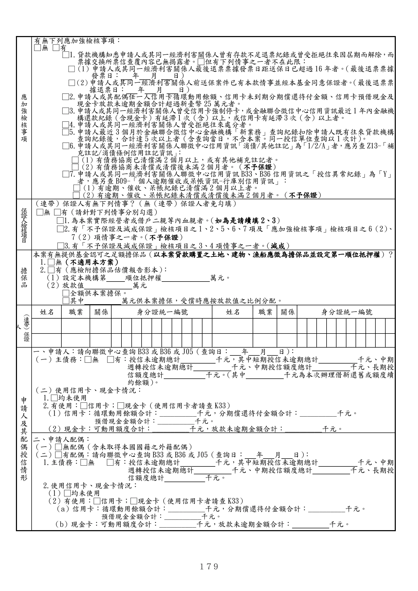

格式 3-1A：信用保證申請書（一般農業貸款個人戶用）
手冊頁：179 PDF頁：193／203

查看PDF文字層
下列文字取自PDF既有文字層，僅供搜尋、複製與無障礙輔助。複雜表格的欄列位置可能失真，正式內容請以原頁預覽或PDF為準。
應 加 強 檢 核 事 項 有無下列應加強檢核事項： □無 □有 □1.貸款機構知悉申請人或其同一經濟利害關係人曾有存款不足退票紀錄或曾受拒絕往來因屆期而解除，而 票據交換所票信查覆內容已無揭露者。□但有下列情事之一者不在此限： □（1）申請人或其同一經濟利害關係人最後退票票據發票日距送保日已超過16年者。（最後退票票據 發票日： 年 月 日） □（2）申請人或其同一經濟利害關係人前送保案件已有本款情事並經本基金同意保證者。（最後退票票 據退票日： 年 月 日） □2.申請人或其配偶任一人信用卡循環動用餘額、信用卡未到期分期償還待付金額、信用卡預借現金及 現金卡放款未逾期金額合計超過新臺幣25萬元者。 □3.申請人或其同一經濟利害關係人曾受信用卡強制停卡，或金融聯合徵信中心信用資訊最近1年內金融機 構還款紀錄（含現金卡）有延滯1次（含）以上，或信用卡有延滯3次（含）以上者。 □4.申請人或其同一經濟利害關係人曾受拒絕往來處分者。 □5.申請人最近 3 個月於金融聯合徵信中心金融機構「新業務」查詢紀錄扣除申請人既有往來貸款機構 查詢紀錄後，合計達5 次以上者（含查詢當日，不含本案。同一授信單位查詢以1次計） 。 □6.申請人或其同一經濟利害關係人聯徵中心信用資訊「消債/其他註記」為「1/2/A」者，應另查Z13-「補 充註記/消債條例信用註記資訊」 ： □（1）有債務協商已清償滿2 個月以上，或有其他補充註記者。 □（2）有債務協商未清償或清償後未滿2個月者。（不予保證） □7.申請人或其同一經濟利害關係人聯徵中心信用資訊B33、B36信用資訊之「授信異常紀錄」為「Y」 者，應另查B09-「個人逾期催收或呆帳資訊-行庫別信用資訊」： □（1）有逾期、催收、呆帳紀錄已清償滿2個月以上者。 □（2）有逾期、催收、呆帳紀錄未清償或清償後未滿2個月者。（不予保證） 保證人檢核項目 （連帶）保證人有無下列情事？（無（連帶）保證人者免勾填） □無 □有（請針對下列情事分別勾選） □1.為本案實際經營者或借戶二親等內血親者。（如為是請續填2、3） □2.有「不予保證及減成保證」檢核項目之1、2、5、6、7 項及「應加強檢核事項」檢核項目之6（2）、 7（2）項情事之一者。（不予保證） □3.有「不予保證及減成保證」檢核項目之3、4項情事之一者。（減成） 擔 保 品 本案有無提供基金認可之足額擔保品（以本案貸款購置之土地、建物、漁船應徵為擔保品並設定第一順位抵押權）？ 1.□無（不適用本方案） 2.□有（應檢附擔保品估價報告影本） ： （1）設定本機構第 順位抵押權 萬元。 （2）放款值 萬元 □全額供本案擔保。 □其中 萬元供本案擔保，受償時應按放款值之比例分配。 （連帶）保證 人 姓名 職業 關係 身分證統一編號 姓名 職業 關係 身分證統一編號 申 請 人 及 其 配 偶 授 信 情 形 一、申請人：請向聯徵中心查詢B33或 B36或 J05（查詢日： 年 月 日） ： （一）主債務：□無 □有：授信未逾期總計 千元，其中短期授信未逾期總計 千元、中期 週轉授信未逾期總計 千元、中期授信額度總計 千元、長期授 信額度總計 千元。（其中 千元為本次辦理借新還舊或額度續 約餘額） 。 （二）使用信用卡、現金卡情況： 1.□均未使用 2.有使用：□信用卡；□現金卡（使用信用卡者請查K33） （1）信用卡：循環動用餘額合計：__________千元，分期償還待付金額合計：__________千元。 預借現金金額合計：__________千元。 （2）現金卡：可動用額度合計：__________千元，放款未逾期金額合計：__________千元。 二、申請人配偶： （一）□無配偶（含未取得本國國籍之外籍配偶） （二）□有配偶：請向聯徵中心查詢B33或 B36或J05（查詢日： 年 月 日） ： 1.主債務：□無 □有：授信未逾期總計 千元，其中短期授信未逾期總計 千元、中期 週轉授信未逾期總計 千元、中期授信額度總計 千元、長期授 信額度總計 千元。 2.使用信用卡、現金卡情況： （1）□均未使用 （2）有使用：□信用卡；□現金卡（使用信用卡者請查K33） （a）信用卡：循環動用餘額合計：__________千元，分期償還待付金額合計：__________千元。 預借現金金額合計：__________千元。 （b）現金卡：可動用額度合計：__________千元，放款未逾期金額合計： 千元。